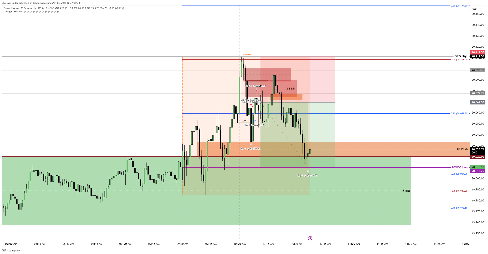
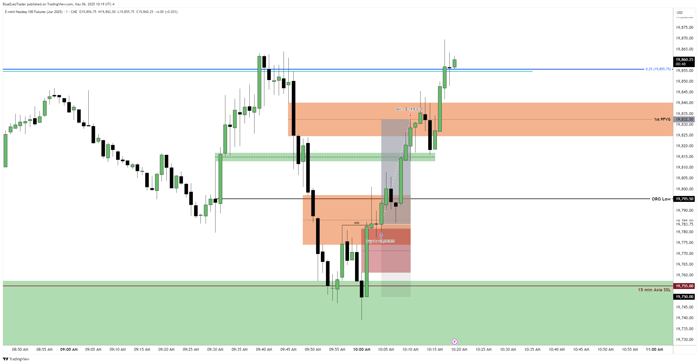

The edge is TIME. Set your charts to New York time. You only need two windows for forex: London Open 02:00-05:00 and New York AM 08:30-11:00. The play: let one session build and sweep liquidity, then trade the reversal in the next killzone - and tighten your focus to the macro slots. When the open is messy, wait for the 10:00 Silver Bullet. Outside killzones, sit on your hands.
Intro - why your "perfect" setup keeps failing
You found a clean MSS, a beautiful FVG, the bias lined up - and it still stopped you out. Sound familiar? Nine times out of ten the setup wasn't the problem. The time of day was.
This is the single biggest lesson in my notes, written in red: if it's not the right time of day, it won't work. The algorithm that delivers price runs on a schedule. The exact same MSS-plus-FVG is a coin flip at 13:00 and an actual edge at 09:50. Killzones are how you stop gambling on good-looking charts and start trading when the market is actually programmed to move.
Everything here comes from how I personally trade and journal it - the times, the macros, the sweep play, and the Silver Bullet. Learn the clock and your win rate fixes itself.
The only clock that matters - New York time
Every single time in this lesson is New York local time (EST/EDT). Not your broker's time, not your local time - New York. The first thing you do is set your chart timezone to New York and never touch it again. Half of trader confusion about "when is London open" disappears the moment your candles line up with the windows below.
The killzone map - the master table
This is the backbone straight out of my trading plan. Memorize it. The two you actually trade forex in are highlighted in your head: London Open and New York AM.
| Killzone | Time (NY) | What it's for |
|---|---|---|
| Midnight Open | 00:00 | Daily reference / true day open |
| London Open | 02:00 - 05:00 | Prime - first real liquidity |
| New York AM | 08:30 - 11:00 | Prime - the main event |
| New York Lunch | 12:00 - 13:00 | Dead zone - avoid |
| New York PM | 13:30 - 16:00 | Continuation / second chance |
| Power Hour | 15:00 - 16:00 | Late-day push |
| Asia Range | 20:00 - 00:00 | Builds the liquidity London hunts |
Notice the rhythm: Asia builds the range, London sweeps it, New York sweeps London. Liquidity is created in one session and harvested in the next. That single sentence is most of forex killzone trading.
Important times inside the day
Three clock points to keep on your radar - they inject volatility and often kick off the move inside a killzone:
- 08:30 NY - News release. High-impact data drops - in my notes these count as manual intervention: FOMC, PPI, CPI, NFP. Displacement after 08:30 sets the tone for the AM session.
- 09:30 NY - US equities open. The "Judas Swing" lives here - a fake move just before the open that traps retail before the real direction.
- 03:00 NY - London stock market open. Adds fuel to the London killzone.
Macros - the sniper windows
Inside each killzone there are tighter slots where the algorithm actually runs price - the macros. If killzones are the right hour, macros are the right ten minutes. These are the exact windows from my plan:
| Session | Macro windows (NY) |
|---|---|
| London | 02:33 - 03:00 · 04:03 - 04:30 |
| New York AM | 08:50 - 09:10 · 09:50 - 10:10 · 10:50 - 11:10 |
| NY Lunch + PM | 11:50 - 12:10 · 13:10 - 13:40 · 15:15 - 15:45 |
The core play - sweep, then go
Here is the bread and butter, the thing that shows up in my journal over and over. One session builds an obvious pool of liquidity - equal highs, equal lows, a session high/low. The next killzone sweeps that liquidity and then reverses into the real move. You are not trading the sweep. You are trading the reversal after the sweep.
The mechanical version: wait for the liquidity grab, then look for a Market Structure Shift (MSS) on your execution timeframe, then enter on the FVG/PD array it leaves behind - inside the killzone. Sweep first, then structure, then entry.
Before 10:00, price took the BSL from the London session. SIBI sitting in premium, then an MSS and a retracement back into that SIBI - entry there, target the NWOG low. Right session, swept liquidity, structure shift, clean target. Result: a winner around +1.4R.
Price swept the 15-minute SSL from the Asia session, then printed an MSS and left an FVG. Entry in that FVG. Same skeleton as above, different liquidity source - the point is the sweep came first, the structure confirmed it, and the entry sat inside the killzone.
The Silver Bullet - 10:00 to 11:00 NY
If you only learn one window, learn this one. The Silver Bullet runs roughly 10:00-11:00 NY and it is the highest-probability slot of my day. My own rule, straight from the notes: when the chart is muddy from the 09:30 open, stop forcing it and wait for 10:00. The Silver Bullet hour cleans up the mess and hands you a setup.
The recipe is always the same - a recent liquidity pool gets swept, you get a displacement/MSS, and you enter on the FVG it leaves, ideally inside the 09:50-10:10 macro. Patience until 10:00 has saved more of my sessions than any indicator ever did.


London Open killzone - 02:00-05:00 NY
London is the first real liquidity of the day. Your job before it opens is simple: mark the Asia range high and low. London will usually reach for one side, sweep it, and then reveal direction. Tighten your focus to the macros at 02:33-03:00 and 04:03-04:30.
One hard-earned caution from my journal: the end of the London session is awkward to trade. If price has only gone one direction all session - say it dumped all morning and you're holding a bullish bias - be very careful late in London. Don't fight a session that's run one way into its close. Mark it, wait for New York.
Price pulled back and respected a level, so the entry was a long - targeting the London session equal highs as the draw on liquidity. The London highs/lows aren't just decoration; they are the magnet the next session aims for.
New York AM killzone - 08:30-11:00 NY
This is the main event for forex. The structure of the morning, the way I trade it:
- 08:30 - news + displacement. After the release, watch the old highs, old lows and inefficiencies. The candle that sweeps recent equal highs/lows and then displaces is your orderblock - equal lows taken gives a bearish candle, equal highs taken gives a bullish one.
- 09:30 - equities open + Judas Swing. A rapid fake move into a breaker just before 09:30 is classic - it traps retail, then reverses.
- 10:00 - Silver Bullet. If 08:30-09:30 was clean, you may already be in. If it was muddy, this is your window.
The Judas Swing - the fake before the real move
This is the thread running through every killzone in my journal: the algorithm already knows where the High of the Day and the Low of the Day will be. Before it delivers the real move it runs a Judas Swing - a fake push in the wrong direction to clear stops and trap people on the wrong side. If I am bullish, I want to see a soft rally into buy-side stops that looks like continuation, then a drop that stops out everyone who chased - then the real move up.
It shows up at both prime opens: a Judas push just after the 02:00 London open, and the classic fake right before the 09:30 equities open. The tell from my notes is that the market gets very smooth on one side before the open - clean, primed liquidity sitting there for the algorithm to take. Do not trade the Judas. Let it complete, then trade the reversal.
One named setup I track here is the 9:30 1st PFVG - the first Fair Value Gap presented right after the 09:30 open. It can be a high-quality entry, but it is conditional: it works when the open delivers a clean displacement away from swept liquidity, and it is a trap when 09:30 is choppy and directionless - which is your cue to wait for the 10:00 Silver Bullet instead.
After the 02:00 London open there was a Judas Swing up, then on the news a drop. I waited for a soft pullback into the FVG it left behind - around the 0.25 zone - where a BISI got broken by a SIBI, so I traded it as an IFVG. Short from there, targeting the SSL below: three equal lows from the prior day. Right killzone, fake cleared, structure shifted, clean liquidity target.
Pre-market & opening range - 3 shots per session
This is the ICT framework I drill. Each session gives you about three chances, built around 30-minute boxes:
- Pre-market range: 07:00-07:30 · 08:00-08:30 · 09:00-09:30. Draw a 30-minute box, hunt the equal highs/lows formed before it on the 15/5/1-minute timeframes.
- Opening range: 07:30-08:00 · 08:30-09:00 · 09:30-10:00.
Across those slots you get roughly three real opportunities a session. The whole time you are looking for the same thing: where is the market smooth (clean, one-sided liquidity) so a sweep there has somewhere to run.
How to know a pool will get swept
Not every bit of liquidity gets taken. From my notes, the tells that a pool is primed for the algorithm:
- Priming on highs: the swing high on the left is higher than the one on the right - that downward-sloping pair of highs is exactly where retail stacks stops.
- Priming on lows: the swing low on the left is lower than the one on the right.
- These primed pools are what the algorithm reaches for - but liquidity sitting there does not guarantee it gets taken this session. You stack confluences (right killzone, right macro, draw on liquidity) to raise the odds.
NY Lunch & PM - when NOT to enter
Knowing when to do nothing is half the edge. NY Lunch (12:00-13:00) is a dead zone - liquidity thins out, moves get choppy, and most "setups" there are traps. Step away.
The PM session (13:30-16:00) is a second chance, not a fresh start. My approach: wait for a pullback to the 1st PFVG and read what price does there before committing. The macro slots to respect are 13:10-13:40 and, into Power Hour, 15:15-15:45.
The discipline - when to sit on your hands
If you tape one list to your monitor, make it this one:
- Outside the killzones. No London Open, no NY AM, no PM macro - no trade.
- NY Lunch (12:00-13:00). Just don't.
- End of London if it only trended one way against your bias.
- Muddy chart after 09:30 - wait for the 10:00 Silver Bullet instead of forcing it.
- No clean draw on liquidity - if there's no obvious pool to target, there's no trade.
- No sweep, no MSS - structure has to confirm before you click. Sweep first.
Your killzone cheatsheet
Screenshot this and keep it next to your charts:
| Window (NY) | Name | Play |
|---|---|---|
| 02:00-05:00 | London Open | Mark Asia range, trade the sweep |
| 02:33-03:00 | London macro | Sniper slot 1 |
| 04:03-04:30 | London macro | Sniper slot 2 |
| 08:30 | News | Displacement, find the orderblock |
| 09:30 | Equities open | Watch the Judas Swing |
| 09:50-10:10 | AM macro | Silver Bullet core |
| 10:00-11:00 | Silver Bullet | Highest-probability hour |
| 12:00-13:00 | NY Lunch | Do nothing |
| 13:30-16:00 | NY PM | Pullback to 1st PFVG |
Last words - set your clock and wait
Killzones are not a secret indicator - they are discipline with a timestamp. Everything you already learned (bias on the higher timeframes, liquidity sweeps, MSS, FVG entries) only fires properly inside these windows. Set your chart to New York time, mark the Asia and London ranges, hunt only in London Open and NY AM, respect the macros, and when in doubt, wait for 10:00.
Do this for one week: trade only the London Open and NY AM killzones, and journal the time of every entry the way I do. You will watch your "random" losses outside those windows vanish - because they were never random, they were just badly timed. Right setup, right time. That's the whole edge.